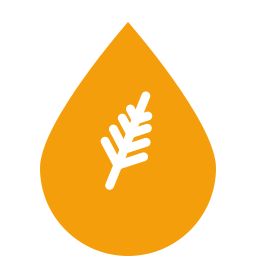
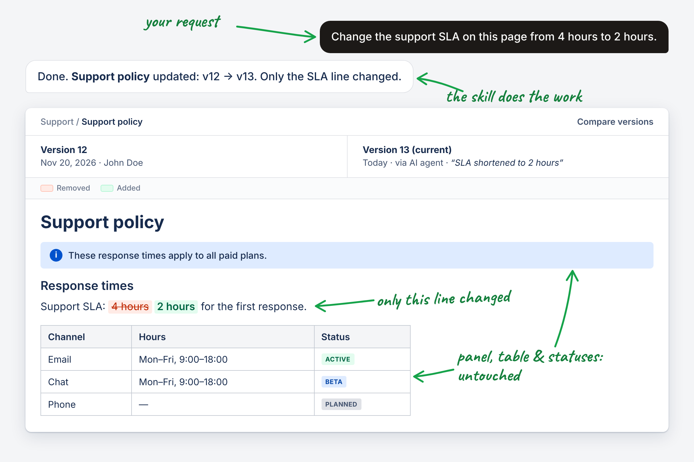
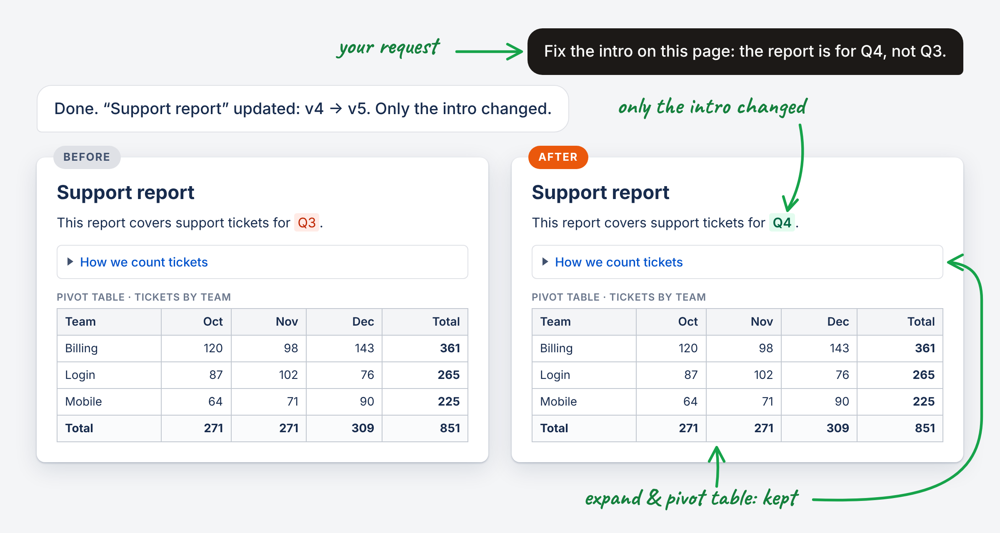
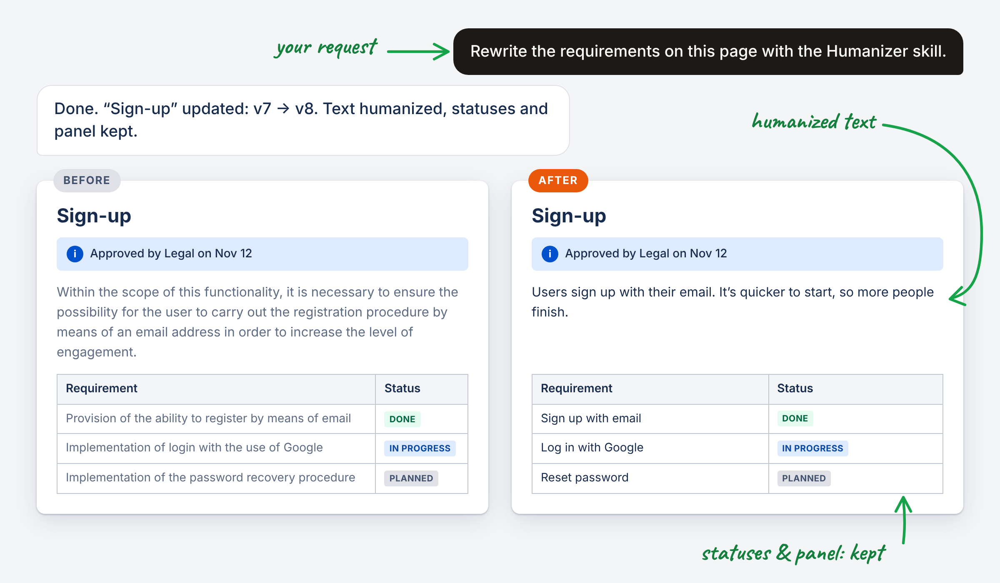
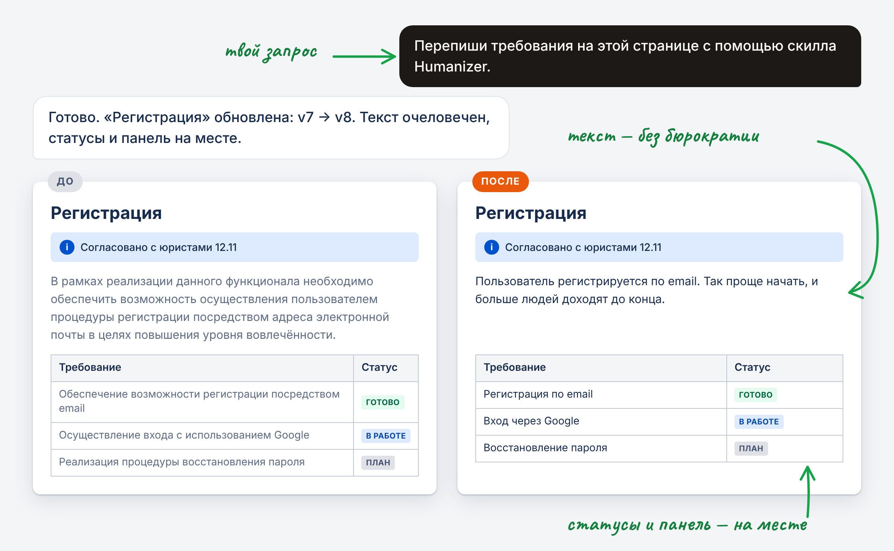
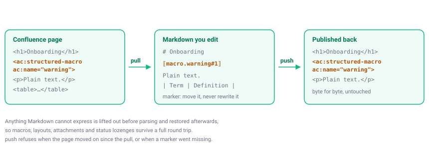

Ask your agent to fix, update or rewrite any page. It changes only what you asked. Macros, tables, panels and status labels stay exactly as they were.

Tell your agent what to change, in plain words. It edits the page and leaves a version comment, so the change shows up in the page history like any other edit.

Expand macros, pivot tables, panels, status labels, attachments, column layouts. Whatever the agent did not touch comes back exactly as it was.

Pair it with the Humanizer skill and your agent turns bureaucratic requirements into plain language. The text changes; the panels, tables and statuses stay. Any language.


If someone edited the page while your agent was working, the agent stops. It tells you who changed the page and when, then reapplies your change on top of theirs. Nothing is overwritten unless you say so.
The same goes for any panel, table or macro that would disappear: the agent stops and names it before anything is published.
| Confluence | Server and Data Center, the versions companies host themselves. Not Cloud: Atlassian covers that. |
| Sign-in | A personal access token on Data Center 7.9 and newer, your usual password on older versions. |
| Your token | Kept in your system keychain. Never in a chat, never in a file. |
| Your agent | Claude Code, Claude Desktop, Cursor, VS Code, Copilot and any agent with MCP or a terminal. |
Company certificates and proxies are handled. Your pages go only to your own Confluence.
About ten minutes, once. You need Node.js 18 or newer and access to your company's Confluence.
$ npm i -g amber-tools/confluence-markdown
Create the file ~/.config/amber/config.toml with your wiki's address:
[confluence] url = "https://wiki.yourcompany.com"
In Confluence: your avatar → Settings → Personal Access Tokens → Create token. Copy it, then store it in your keychain (macOS asks you to paste it):
$ security add-generic-password -s amber-confluence-token -a amber -w
No tokens in your Confluence (versions before Data Center 7.9)? Add user = "you@yourcompany.com" to the config file and store your password instead:
$ security add-generic-password -s amber-confluence -a you@yourcompany.com -w
On Linux and Windows, put the token in AMBER_CONFLUENCE_TOKEN in the agent settings in step 5.
Open any page in your browser and copy its address:
$ amber confluence doctor "https://wiki.yourcompany.com/pages/viewpage.action?pageId=123"
Every line should get a tick. The check only reads; it never changes the page.
Claude Code:
$ claude mcp add confluence -- amber-confluence-mcp
Claude Desktop, Cursor, VS Code and other MCP clients: add this to the MCP settings and restart the app.
{ "mcpServers": { "confluence": { "command": "amber-confluence-mcp" } } }
If the app says it cannot find the command, run which amber-confluence-mcp and put the full path it prints in place of amber-confluence-mcp.
Get the agent skill on Agensi and connect Agensi to your agent (one-minute setup). The skill teaches your agent to edit pages safely: which tool to use, how to keep macros, what to do when a colleague edited the page first.
Paste a page link and say what to change:
Use my Agensi skill Amber Confluence. On https://wiki.yourcompany.com/pages/viewpage.action?pageId=123 change the support SLA from 4 hours to 2 hours.
Then open the page history in Confluence: one new version, with a comment saying what changed.
The tool is free and open source. It runs as an MCP server for agents and as a command line tool for people. Anything Markdown cannot express is lifted out before the conversion and put back unchanged; the agent sees a marker in its place.
{
"mcpServers": {
"confluence": {
"command": "amber-confluence-mcp",
"env": { "AMBER_CONFLUENCE_URL": "https://wiki.example.com" }
}
}
}
read a page as Markdown
replace the page body
change one passage, leave the rest alone
see whether a local copy went stale
From the terminal:
$ amber confluence pull 100000001 Onboarding (v12, space DEMO) ~/amber/pages/100000001.md 3 opaque block(s): ⟦macro.toc#1⟧ ⟦macro.warning#1⟧ ⟦macro.status#1⟧ $ amber confluence diff 100000001 ## Owners - Analyst: John Doe + Analyst: John Doe, standing in for the release + ## Rollout + Staged, two regions first. $ amber confluence push 100000001 -m "rollout section" Onboarding v12 -> v13

Source, docs and tests on GitHub.
Get the skill, follow the steps above, and ask.